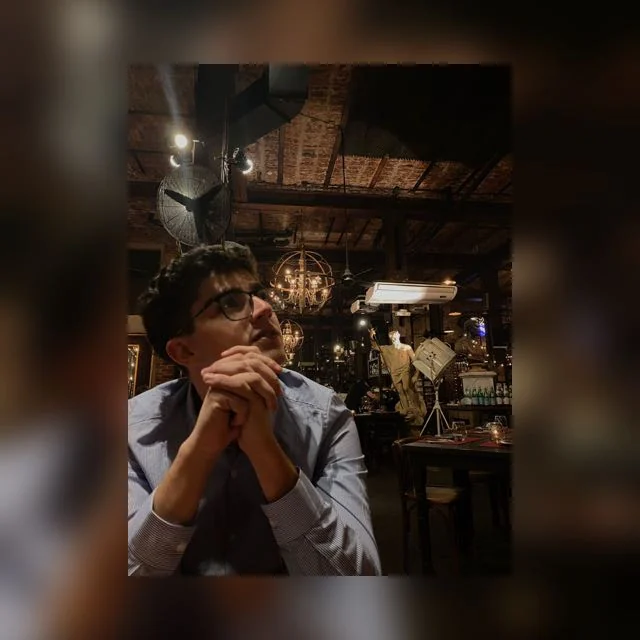

Hablemos
Buenos Aires
Agendá una reunión, escribinme por WhatsApp o mail, o leé quién soy y cómo trabajo.

Federico San Lorenzo
Data Analyst y productos digitales
Diseño y desarrollo sitios, plataformas y reportes. Las demos se muestran en reunión, no con links públicos.
Quién soy
Soy Federico San Lorenzo. Vivo en Buenos Aires y trabajo como data analyst y en productos digitales: paso datos operativos y de marketing a tableros y decisiones más claras, y también diseño y desarrollo sitios y software a medida para educación, comercio y servicios profesionales.
Uso SQL, Python y herramientas de reporting como Power BI, Looker Studio y Google Analytics (GA4), además de automatizar flujos entre APIs y CRMs. Tengo alrededor de tres años de experiencia, hablo español e inglés (C1) y estoy disponible para trabajo remoto y para proyectos freelance de diseño web, software a medida y data analytics.
Si querés ver un proyecto de este portfolio en vivo, o contarme algo que necesitás construir, el camino más directo es una reunión de 30 minutos.
¿Querés ver un caso o conversar un proyecto? Reservá 30 minutos en mi calendario.
Cómo agendar
Elegí el horario que te quede bien. La reunión es por Google Meet, dura 30 minutos, y la usamos para ver un proyecto en particular o para hablar de un trabajo nuevo.
Si preferís un mensaje corto primero, escribinme por WhatsApp o a fslcoach@gmail.com.
- 1Contame qué proyecto querés ver, o qué necesitás.
- 2Agendá 30 minutos en mi calendario, o escribinme por WhatsApp.
- 3Nos vemos por videollamada y lo vemos juntos.
También podés escribirme ahora y lo coordinamos.
Contacto directo
- AgendaAgendar una reunión de 30 minutos →
- WhatsApp +54 9 11 5318-2087
- Emailfslcoach@gmail.com
- LinkedInFederico San Lorenzo
- GitHubFedu-dev-jpeg
Agendemos
Reservá un horario o mandame un WhatsApp. Te respondo para coordinar la reunión.